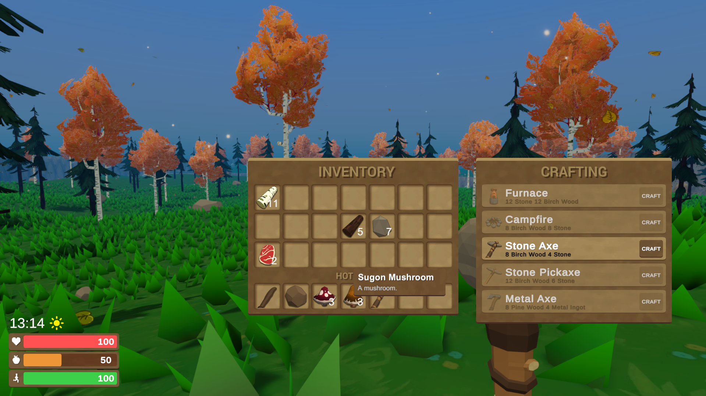

Inventory
The inventory was built with the following features.
Item Moving / Swapping
Automatic Item Stacking
Item Splitting 50/50
Item Tooltip
Item Dropping


Crafting
The crafting system handles the creation of items and removal of materials from the inventory, the system stores multiple recipies that are used to check if the inventory contains the required meterials to craft an item. The crafting system uses a queue to add and remove crafting requests from, however due to the simplicity of the system once a crafting request has been sent it cannot be cancelled.